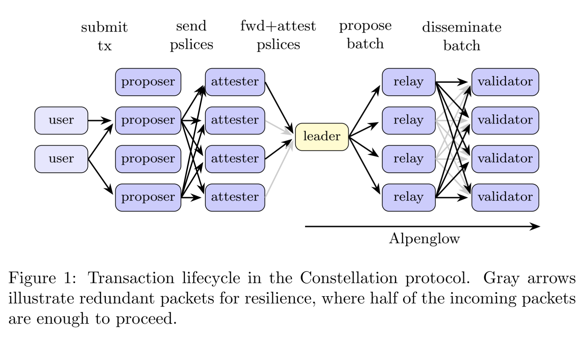

Quentin Kniep, Max Resnick, Jakub Sliwinski, Roger Wattenhofer
White Paper
Building a blockchain capable of supporting global financial markets requires a protocol design resistant to manipulation. Safety and liveness properties ensure that the system remains functional, and have been the core subjects of study. Consensus research has greatly advanced the performance of blockchains, but another critical flaw remains prevalent in blockchain networks of today: malicious privileged parties affect latency and ordering of transactions to take advantage of users.
We present Constellation, a multiple concurrent proposers (MCP) protocol for Solana, that provides an additional, economically motivated property of selective censorship resistance. Intuitively speaking, Constellation ensures that latency and ordering of transactions are fair, fostering a market structure in which users cannot be abused. Constellation achieves the fastest (e.g., 50 ms), protocol-enforced, censorship-resistant economic tick among production blockchain protocols.
The protocol features a layer of nodes called attesters, which rely on synchronized clocks to enforce timely and censorship-resistant transaction processing. The economic ticks, i.e. intervals of transaction inclusion, are not constrained by the global network delay.

@misc{kniep2025SolanaConstellation,
author = {Q. Kniep and M. Resnick and J. Slirowski and Roger Wattenhofer},
title = {Solana Constellation: Fair Internet Capital Markets},
year = {2025},
howpublished = {\url{https://anza.xyz/constellationwhitepaper}}
}